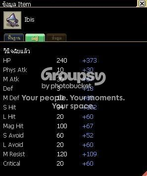

ให้ลองดูเปรียบเทียบแล้วกาน(ไม่ค่อยเปลี่ยนเท่าไรตามที่บอกอะนะ
อันนี้สมัยก่อน

ปัจจุบัน

http://eco.froztic.in.th/archive/ecofanclub/
http://eco.froztic.in.th/archive/ecofanclub/viewtopic.php?f=25&t=31743

Ludiss เขียน:ecoconoeco เขียน:ตกไปซะลึก กว่าจะหาเจอ
อันนี้อยากรู้มากๆ... ใครรู้บ้างว่า่ค่าฟื้นฟูhpของแมวเนี่ยถ้าเต็ม ตอนเอาไปล้มมันจะโดนรีแบบค่าstatอื่นๆมั้ย?
น่าจะโดนรีนะครับ
ถามความเห็นกันหน่อย ถ้าพลังเวทย์เเมว 80+ เเล้ว จะล้มดีมั้ยครับเนี่ย
อันนี้ขบวนการของผมเองครับ ยามะจังเป็นคู่หูอันดับ 1 ของผมนะครับ หุๆๆ


ecoconoeco เขียน:ถามหน่อยครับ ว่าป้อนแมวจน+200เนี่ย ใช้ไปกี่กระป๋อง แล้วใช้เวลารวมประมาณเท่าไหร่ครับ...?
ผมฝึกแมวแบบเอาhpเต็มมาสองรอบ สู้มอนก็กดป๋องให้ตลอด ตอนนี้ยังบวกแค่133เอง เสียไปประมาณเกือบ4000กว่ากระป๋องได้
แม่จ้าว สงสัย+200นี่ไม่ต่ำกว่าหมื่นกระป๋องแน่ๆ